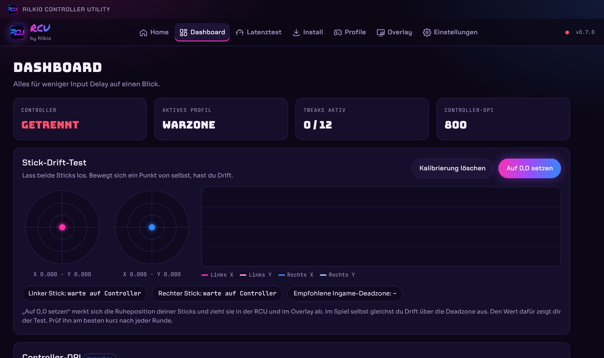
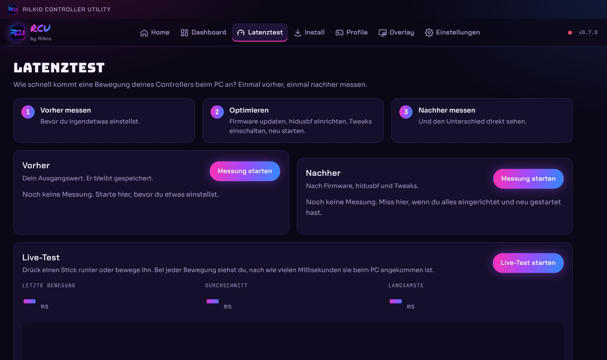
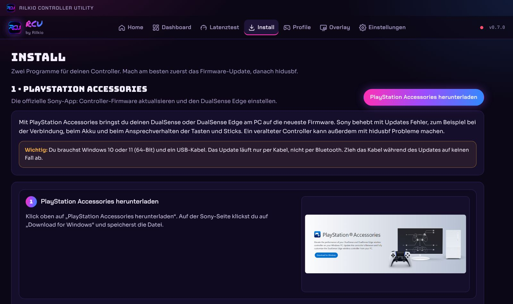
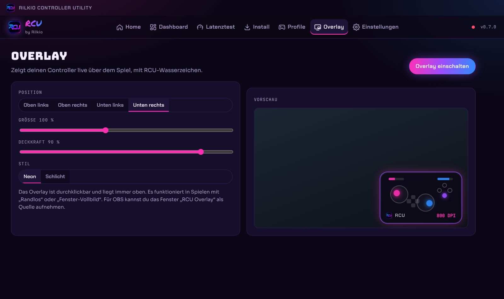

Vorher · Windows-Standard
- Controller meldet sich oft nur 125- oder 250-mal pro Sekunde
- Energiesparen drosselt USB und CPU
- Game DVR nimmt im Hintergrund auf
- Stick-Drift merkst du erst im Gefecht
 Rilkio Controller Utility · v0.7.0
Rilkio Controller Utility · v0.7.0
Die RCU stellt Windows und deinen Controller so ein, dass deine Eingaben so schnell wie möglich im Spiel ankommen. Mit einem Klick, ohne Basteln in der Registry. Entwickelt von mir, Rilkio, für alle, die mit Controller zocken.
Windows 10/11 · 64-Bit · Free-Tarif kostenlos · ein Konto für Website und App

Was RCU dir bringt
Viele Windows-Einstellungen und Controller-Standards sind nicht fürs Gaming gemacht. Die RCU bringt alles an einen Ort.
Energiesparen, Game DVR, Timer und Netzwerk werden fürs Zocken eingestellt. Mit hidusbf fragt Windows deinen Controller bis zu 1000-mal pro Sekunde ab.
Mit dem Latenztest misst du vorher und nachher, wie schnell dein Controller beim PC ankommt. Der Stick-Drift-Test zeigt dir, ob deine Sticks driften.
Jeder Tweak lässt sich einzeln ausschalten. Unter Einstellungen setzt ein Klick alle Änderungen der RCU wieder zurück.
Vorher / Nachher
Zieh den Regler. Jeder Strich ist eine Meldung deines Controllers an den PC, gezeigt über 40 Millisekunden.
Vorher · Windows-Standard
Nachher · mit RCU
Die Zahlen zeigen die Polling-Rate, also wie oft der PC deinen Controller abfragt. Wie viel du in deinem Setup gewinnst, misst du selbst mit dem Latenztest in der RCU.
Einblick in die App
Echte Bildschirmfotos aus der RCU. Wähle einen Bereich.



In 3 Minuten startklar
Registriere dich kostenlos. Das Konto gilt für die Website und die App.
RegistrierenLade die Setup-Datei für Windows herunter und installiere sie.
Zum DownloadStarte die RCU und melde dich mit derselben E-Mail und demselben Passwort an.
Installation erklärtBewertungen
Echte Bewertungen von Leuten mit RCU-Konto. Ich prüfe jede Bewertung, bevor sie hier erscheint.
Noch keine Bewertungen. Du testest die RCU gerade? Dann schreib die erste!
Zum Bewerten meldest du dich mit deinem RCU-Konto an. Anmelden
Wer steckt dahinter
aka Kiril
Ich mache Warzone-Content mit Tipps, Tricks und Clips. Weil ich selbst mit Controller spiele und jede Millisekunde zählt, habe ich die RCU gebaut: alles, was ich an meinem eigenen PC einstelle, in einer App für dich.
Content Creator
Aktuelle Meta-Loadouts, Tipps für mehr Wins und meine besten Clips.
Entwickler
Ich entwickle die RCU selbst und baue sie mit eurem Feedback weiter aus.
Folg mir für Updates zur RCU und Warzone-Content. Fragen? Komm auf den Discord.
Fragen
Nein. Mit einem kostenlosen Konto bekommst du den Free-Tarif mit den Anleitungen für hidusbf und PlayStation Accessories. Premium mit allen Tweaks, Tests, Profilen und Overlay kommt bald.
Die RCU ist noch nicht digital signiert, deshalb zeigt Windows „Der Computer wurde durch Windows geschützt“. Klicke auf Weitere Informationen und dann auf Trotzdem ausführen.
Ja. Jeden Tweak kannst du einzeln ausschalten. Unter Einstellungen → „Alles komplett zurücksetzen“ stellt die RCU alle ihre Änderungen zurück.
Am besten funktioniert die RCU mit PlayStation-Controllern (DualSense, DualSense Edge, DualShock 4) per USB-Kabel. Die Windows-Tweaks helfen mit jedem Controller.
Nein. Du registrierst dich einmal, hier oder in der App, und meldest dich überall mit derselben E-Mail und demselben Passwort an.
Nein. Die RCU ändert keine Spieldateien und greift nicht ins Spiel ein. Sie stellt nur Windows und deinen Controller-Treiber besser ein.